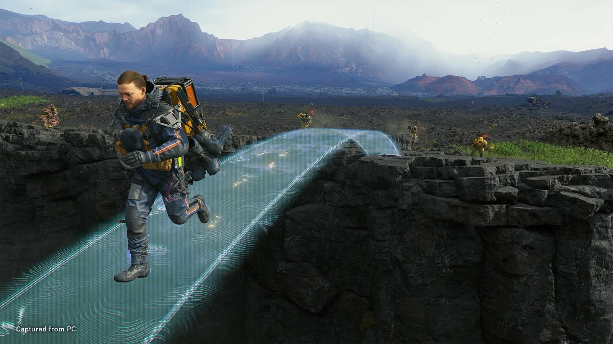

台灣經濟發展歷史
過去70年台灣經濟發展的歷史以及相關政策

專案作品 Portfolio

專案一：網站設計
此專案為一個響應式網站，包括首頁、關於頁和聯絡表單，使用HTML/CSS/JS開發。
開發進度：80%

專案二：資料分析
使用 Python 製作的資料分析專案，透過圖表視覺化呈現商業數據，提供決策參考。
開發進度：60%

專案三：行動應用
一款採用 React Native 開發的行動應用程式，可在 iOS/Android 裝置上順暢運行。
開發進度：90%
死亡擱淺
作者 ／ 小島秀夫
出版社 ／ 旗標出版
出版日期 ／ 2023/11/30
商品語言 ／ 中文
級別 ／ 保護級
定價 ／ NT$ 1,080
分崩離析的世界
在這個充滿挑戰的世界中，我們需要重新連結彼此，建立更深的理解與共鳴。透過這個過程，我們將一起探索人類的情感與經歷，尋找那些能夠觸動心靈的故事。
扮演「送貨員」，在這個被「死亡擱淺」影響而撕裂的世界。玩家將從新美國東岸的「主結市」出發一路向西岸前進。
重新連結這破碎世界的旅程
在路上除了運送物資給各個據點，還要讓各地連上「開若爾網路」以便聯繫及取得周遭的資訊。
有一種敵人被稱呼為「BT」，意為「擱淺體」。BT只會在降下「時間雨」（Time Fall）時出現，且沒有實體。